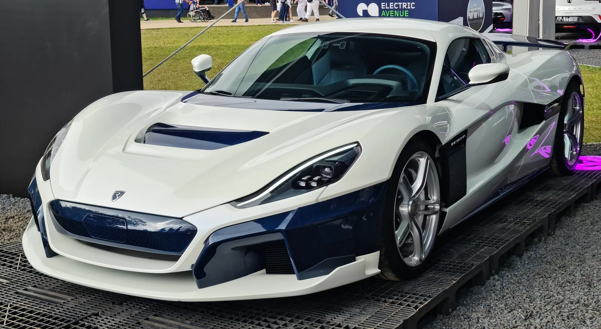
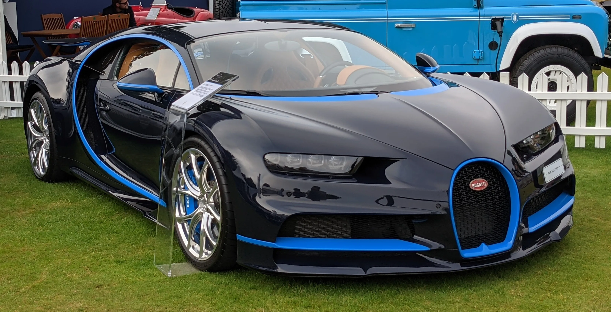
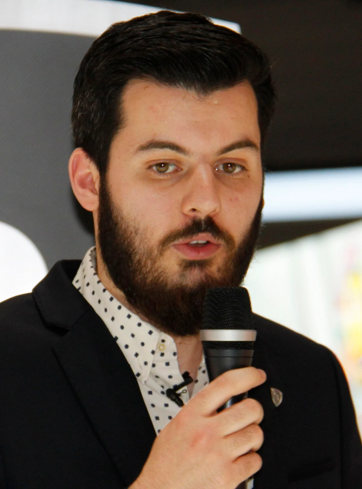

▲ 부가티의 차세대 플래그십 뚜르비옹. V16 기반 플러그인하이브리드로, 완전 전동화를 추구한 포르쉐와 전략 차이를 보여준 모델이기도 하다
1. 포르쉐, 부가티 리막 지분 전량 매각 완료
포르쉐가 2026년 9월 9일 부가티 리막과 리막 그룹에 보유하고 있던 지분을 모두 미국 HOF캐피탈 주도 컨소시엄에 매각하는 거래를 완료했다고 발표했다. 규제 당국의 승인을 거쳐 마무리된 이번 거래로 포르쉐는 부가티 리막 지분 45%와 리막 그룹 지분 20.6%를 모두 넘겼다. 거래 규모는 약 10억 유로(약 1조 6,000억 원)로, 이 가운데 2억 5,000만 유로는 포르쉐 그룹의 연금 재원 확충에 투입될 예정이다.
매각 계약 자체는 지난 4월 24일 체결됐고, 5개월가량의 절차를 거쳐 이번에 최종 완료됐다. 이번 지분 매각으로 포르쉐의 2026년 연간 자동차 부문 순현금흐름 마진 전망치도 기존 3~5%에서 5.5~7.5%로 상향 조정됐다.

▲ 부가티의 상징과도 같은 베이론 16.4. 부가티는 이번 지분 매각으로 폭스바겐그룹 산하 시절을 공식적으로 마감했다 ⓒ Wikimedia Commons
2. 2021년 합작 출범부터 이번 매각까지
부가티 리막은 2021년, 포르쉐가 보유하던 부가티 지분과 크로아티아 전기 하이퍼카 업체 리막이 합쳐지며 출범했다. 당시 지분 구조는 리막 그룹이 55%, 포르쉐가 45%를 보유하는 형태였고, 포르쉐는 이와 별개로 모회사 격인 리막 그룹 자체 지분도 20.6% 들고 있었다. 부가티라는 100년 넘은 프랑스 럭셔리 브랜드와, 전기 하이퍼카 네베라로 이름을 알린 신생 스타트업 리막의 결합이라는 점에서 당시 업계의 관심을 모은 조합이었다.

▲ 리막의 순수전기 하이퍼카 네베라. 마테 리막이 이끈 리막 오토모빌리의 기술력을 상징하는 모델로, 2021년 부가티와의 합작 출범 배경이 됐다 ⓒ Wikimedia Commons
| 구분 | 2021년 출범 당시 | 2026년 9월 이후 |
|---|---|---|
| 부가티 리막 지분 | 리막그룹 55% / 포르쉐 45% | 리막그룹 확대, 포르쉐 지분 소멸 |
| 리막 그룹 지분(포르쉐 보유분) | 20.6% | HOF캐피탈 컨소시엄에 매각 |
| 부가티 자동차 대표 | 크리스토프 피오숑 사장 | 마테 리막 사장 겸임 |
| 거래 규모 | - | 약 10억 유로(약 1조 6,000억 원) |

▲ 부가티 시론. 베이론의 후속으로 2016년 공개된 폭스바겐그룹 시절 대표 모델로, 이번 지분 매각 이전까지 부가티의 상징적 존재였다 ⓒ Wikimedia Commons
3. 왜 결별했나 - 폭스바겐그룹의 사정과 전략 차이
이번 매각의 배경에는 폭스바겐그룹 전반의 재무 상황과, 포르쉐·부가티 두 브랜드 사이의 전략적 방향 차이가 함께 작용했다. 폭스바겐그룹은 미국발 관세 리스크와 중국 시장 수요 둔화로 수익성이 눌리면서, 비핵심 자산을 정리해야 하는 압박을 받아왔다. 포르쉐 역시 전동화 투자에 대한 회수가 예상보다 더뎌지면서 자산 재조정에 나선 상태였다.
전략 측면에서도 두 브랜드는 다른 길을 걸었다. 포르쉐는 대량 양산 체제와 전동화 규제 대응에 무게를 둔 반면, 부가티는 V16 엔진 기반 플러그인하이브리드 하이퍼카 뚜르비옹을 밀어붙이며 완전 전동화와는 거리를 둔 독자 노선을 유지해왔다. 이 같은 방향 차이가 결국 지분 정리로 이어졌다는 것이 업계의 해석이다.
📍 참고로 알아두면 좋은 것
부가티는 2021년 포르쉐·리막 합작 이후에도 프랑스 몰샤임 공장에서 별도 생산 체제를 유지해왔다. 뚜르비옹은 V16 엔진에 3개의 전기모터를 결합한 플러그인하이브리드 하이퍼카로, 순수전기 하이퍼카였던 리막 네베라와는 파워트레인 철학 자체가 다르다. 이 차이가 그룹 내에서 두 브랜드의 정체성을 계속 구분 짓는 요인으로 작용해왔다.
4. 마테 리막, 부가티 사장 겸임으로 경영권 강화
이번 지배구조 개편의 핵심은 창업자 마테 리막의 영향력 확대다. 그동안 부가티 자동차를 이끌어온 크리스토프 피오숑 사장이 물러나고, 마테 리막이 부가티 리막 최고경영자(CEO) 직함에 더해 부가티 자동차 사장직까지 직접 겸임하게 됐다. 리막 테크놀로지 최고운영책임자(COO)를 지낸 마르코 브르클랴치치는 부가티 리막의 새 COO로 합류한다.
마테 리막은 1988년생의 크로아티아 출신 발명가·기업가로, 2009년 자신의 첫 전기 레이싱카를 개발한 것을 시작으로 리막 오토모빌리를 창업했다. 이후 전기 하이퍼카 네베라로 세계적 주목을 받으며 '전기차 천재'라는 별칭을 얻었고, 2021년 부가티와의 합작 출범 당시부터 10개년 비전을 제시해온 인물이다. 이번 개편으로 그는 이 비전을 가속화하겠다는 방침을 밝혔다.

▲ 부가티 리막 CEO 마테 리막. 이번 지분 개편으로 부가티 자동차 사장직까지 겸임하며 경영권을 강화했다 ⓒ Wikimedia Commons
5. HOF캐피탈은 누구, 앞으로의 방향은
부가티 리막의 새 주인이 된 HOF캐피탈은 뉴욕에 본사를 둔 벤처캐피털로, 운용자산 규모가 약 120억 달러(약 16조 원)에 달한다. 이번 컨소시엄에서는 블루파이브캐피탈이 최대 출자자로 참여했고, 미국·유럽의 여러 기관투자자가 함께했다. HOF캐피탈은 부가티를 "첨단 복합 기술과 초호화 명품 가치가 결합된 프리미엄 테크 플랫폼"으로 평가하며, 향후 기업공개(IPO)나 기술 라이선스 사업을 통한 가치 창출을 목표로 하고 있다고 밝혔다.
마테 리막은 프랑스 몰샤임의 신규 생산시설 '라 메뉘팍튀르'를 본격 가동하고, V16 하이브리드 하이퍼카 뚜르비옹의 양산 체제를 갖추는 데 주력할 방침이다. 관련 소식은 부가티 뉴스룸에서 확인할 수 있다. 바로가기
✅ 부가티 리막 지배구조 개편, 이것만은 확인하세요
· 포르쉐, 부가티 리막 지분 45%·리막 그룹 지분 20.6% 전량 매각(2026년 9월 9일 완료)
· 매각 상대는 미국 HOF캐피탈 주도 컨소시엄(최대 출자자 블루파이브캐피탈), 거래 규모 약 1조 6,000억 원
· 크리스토프 피오숑 부가티 사장 퇴임, 마테 리막이 사장직 직접 겸임
· 배경은 폭스바겐그룹 비핵심자산 정리 압박 + 포르쉐·부가티 전략 방향 차이(완전전동화 vs V16 PHEV)
· 향후 몰샤임 신공장 '라 메뉘팍튀르' 가동, 뚜르비옹 양산·IPO 가능성 거론
6. 정리
부가티 리막의 이번 지배구조 개편은 단순한 지분 거래를 넘어, 완전 전동화를 지향한 포르쉐와 V16 하이브리드 독자 노선을 고집한 부가티 사이의 5년 묵은 방향 차이가 마침표를 찍은 사건으로 읽힌다. 크리스토프 피오숑의 퇴임과 마테 리막의 사장 겸임은 부가티가 폭스바겐그룹의 그늘에서 벗어나 창업자 중심 경영 체제로 재편됐음을 보여준다. HOF캐피탈이라는 새로운 자본 파트너를 맞은 부가티가 몰샤임 신공장 가동과 뚜르비옹 양산이라는 다음 단계를 어떻게 풀어갈지 주목된다.